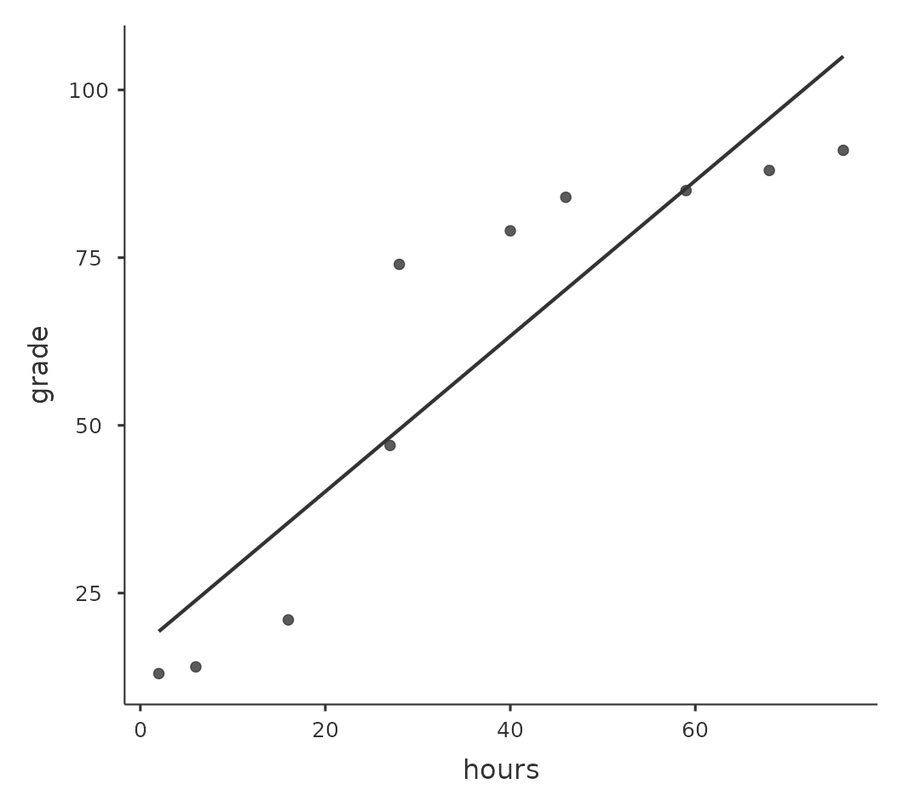

| 變項 | 最小值 | 最大值 | 平均值 | 中位數 | 標準差 | 四分位數間距 |
|---|---|---|---|---|---|---|
| 老爸的沮喪程度 | 41.00 | 91.00 | 63.71 | 62.00 | 10.05 | 14.00 |
| 老爸睡眠小時數 | 4.84 | 9.00 | 6.97 | 7.03 | 1.02 | 1.45 |
| 小嬰兒睡眠小時數 | 3.25 | 12.07 | 8.05 | 7.95 | 2.07 | 3.21 |
10 相闗與線性迴歸
本章的學習目標是相關與線性迴歸。這些是用來分析預測變項及應變項關係的標準統計學工具。1
10.1 相關
這一節要談如何描述資料變項之間的關係，因此會不斷提到變項之間的相關。首先，讓我們看一下列在 Table 14.1 的本章示範資料描述統計。
10.1.1 示範資料
讓我們從一個與每個新生兒父母都息息相關的主題談起：睡眠。這裡使用的資料集是虛構的，但是來自本人(原作者)的真實經驗：我想知道我那剛出生的兒子的睡眠習慣對我個人的情緒有多大影響。假想我可以非常精確地評估我的沮喪分數，評分從0分（一點都不沮喪）到100分（像一個非常非常沮喪的老頭子），還有我每天都有測量我的沮喪分數、我的睡眠習慣和我兒子的睡眠習慣持續是100天。身為一位數位時代的書呆子，我把資料保存在一個名為parenthood.csv的檔案。匯入jamovi，我們可以看到四個變項：dani.sleep，baby.sleep，dani.grump和day。請注意，當您首次打開這份檔案，jamovi可能無法正確猜測每個變項的資料類型，同學可以自行修正：dani.sleep，baby.sleep，dani.grump和day都可以被指定為連續變項，而ID是一個名義且為整數的變項。2
接著我會看一下一些基本的描述性統計數據，並且三個我有興趣的變項視覺化，也就是 Figure 14.1 展示的直方圖。需要注意的是，不要因為jamovi可以一次計算幾十種不同的統計數據，你就要報告所有數據。如果我要以此結果撰寫報告，我會挑出那些我自己以及我的讀者最感興趣的統計數據，然後將它們放入像 Table 14.1 這樣的簡潔的表格裡。3 需要注意的是，當我將數據放入表格時，我給了每個變項一個“高可讀性”的名稱。這是很好的做法。另外，請注意這一百天我都沒有睡飽，這不是好的習慣，不過其他帶過小孩的父母告訴我，這是很正常的事情。

10.1.2 相關的強度與方向
我們可以繪製散佈圖，讓我們能俯瞰兩個變項之間的相關性。雖 然在理想情況下，我們希望能多看到一些資訊。例如，讓我們比較dani.sleep和dani.grump之間的關係（ fig-fig10-2 ，左）與baby.sleep和dani.grump之間的關係（ fig-fig10-2 ，右）。當我們並排比較這兩份散佈圖，這兩種情況的關係很明顯是同質的：我或者我兒子的睡眠時間越長，我的情緒就越好！不過很明顯的是，dani.sleep和dani.grump之間的關係比baby.sleep和dani.grump之間的關係更強：左圖比右圖更加整齊。直覺來看，如果你想預測我的情緒，知道我兒子睡了多少個小時會有點幫助，但是知道我睡了多少個小時會更有幫助。

相反地， Figure 14.3 的另外兩個散佈圖告訴我們另一個角度的故事。比較“baby.sleep 與 dani.grump”的散佈圖（左）和“baby.sleep 與 dani.sleep”的散佈圖（右），變項之間的整體關係強度相同，但是方向不同。也就是說，如果我的兒子睡得較長，我也會睡得更多（正相關，右圖），但是他如果睡得更多，我就不會那麼沮喪（負相關，左圖）。

10.1.3 相關係數
現在我們要進一步延伸上述的概念，也就是正式認識 相關係數(correlation coefficient)。更具體地說，本節主要介紹皮爾森相關係數（Pearson’s correlation），慣例書寫符號是 \(r\)。在下一節，我們會用更精確符號 \(r_{XY}\) ，表示兩個變項 \(X\) 和 \(Y\) 之間的相關係數，值域涵蓋-1到1。當\(r = -1\)時，表示變項之間是完全的負相關；當\(r = 1\)時，表示變項之間是完全的正相關；當\(r = 0\)時，表示變項之間是完全沒有關係。 Figure 14.4 展示幾種不同相關性的散佈圖。
[其他技術細節 4]

標準化共變異數不僅保留前述共變異數的所有優點，而且相關係數r的數值是有意義的: \(r = 1\)代表著完美的正相關，\(r = -1\)代表著完美的負相關。稍後解讀相關係數這一節有更詳細的討論。接著讓我們看一下如何在jamovi中計算相關係數。
10.1.4 相關係數計算實務
只要在jamovi’迴歸’模組選單，選點要計算的相關係數，就能計算所有納入變項對話框的任何兩個變項之間相關係數，如同 Figure 14.5 的示範，沒有出錯的話，報表會輸出’相關係數矩陣’(Correlation Matrix)。

10.1.5 解讀相關係數
在現實世界很少會遇到相關係數為1的狀況。那麼，要如何解讀\(r = 0.4\)的相關性？老實說，這完全取決於你想分析這些資料的目的，以及你的研究領域對於相關係數強度的共識。我(原作者)有一位工程領域的朋友曾經對我說，任何小於\(0.95\)的相關係數都是沒有價值的（我覺得即使對於工程學，他的說法也有點誇張）。在心理學的分析實務，有時應該期望有如此強的相關性。 例如，使用有常模的測驗測試參與者的判斷能力，如果參與者的表現與常模資料的相關性不能達到\(0.9\)，任何使用這個測驗預測的理論就會失效5。然而，探討與智力分數有關的因素（例如，檢查時間，反應時間）之間的相關性，如果相關係數超過\(0.3\)，已經是非常好的結果。總之，解讀相關係數完全根據解讀的情境。儘管如此，剛開始接觸的同學們可以參考 Table 14.2 的概略式解讀原則。
| 相關係數 | 強度 | 方向 |
|---|---|---|
| -1.0 ~ -0.9 | 非常強 | 負相關 |
| -0.9 ~ -0.7 | 強 | 負相關 |
| -0.7 to -0.4 | 中等 | 負相關 |
| -0.4 ~ -0.2 | 弱 | 負相關 |
| -0.2 ~ 0 | 微弱 | 負相關 |
| 0 ~ 0.2 | 微弱 | 正相關 |
| 0.2 ~ 0.4 | 弱 | 正相關 |
| 0.4 ~ 0.7 | 中等 | 正相關 |
| 0.7 ~ 0.9 | 強 | 正相關 |
| 0.9 ~ 1.0 | 非常強 | 正相關 |
然而，有一件點任何一位統計學教師都會不厭其煩地提醒同學，就是解讀資料變項相關係之前，一定要看散佈圖，一個相關係數可能無法充分表達你要說的意思。統計學中有個經典案例「安斯庫姆四重奏」(Anscombe’s Quartet)(Anscombe, 1973)，其中有四個資料集。每個資料集都有兩個變項， \(X\) 與 \(Y\)。四個資料集的 \(X\) 平均值都是 \(9\)， \(Y\) 的平均值都是 \(7.5\)。所有 \(X\) 變項的標準差幾乎相同，\(Y\) 變項的標準差也是一致。每種資料集的\(X\) 和 \(Y\) 相關係數均為 \(r = 0.816\)。同學可以打開本書示範資料庫裡的Anscombe資料檔親自驗證。
也許你認為這四個資料集看起來很相似，其實上並非如此。從 Figure 14.6 的散佈圖可以發現，所有四個資料集的\(X\) 和 \(Y\) 變項之間的關係各有千秋。這個案例給我們的教訓是，實務中很多人經常會忘記：「視覺化你的原始數據」（見 Chapter 5 ）。
10.1.6 斯皮爾曼等級相關
皮爾森相關係數的用途很多，不過也有一些缺點，尤其是這個係數只是測量兩個變項之間的線性關係強度。換句話說，係數數值是計量整體資料與一條完美直線的趨近程度。當我們想具體表達兩個變項的“關係”時，皮爾森相關係數通常是很好的選擇。但有時並非最佳選項。
線性關係是當一個變項\(X\)的數值增加，也能反映另一個變項\(Y\)的增加。但是兩者關係不是線性的話，皮爾森相關係數就不太合適。例如，準備考試所花的時間和考試成績之間的關係，可能就是這樣的情況。如果一位同學沒有花時間（\(X\)）準備一個科目，那麼他排名的成績應該只有0％（\(Y\)）。然而，只要一點點努力就會帶來巨大的改善，像是認真上幾堂課並且做筆記就可以學到很多東西，成績排名有可能會提高到35％，而且這是假設沒有做課後復習的情況。然而，想要獲得排名90％的成績，就要比排名55％的成績付出更多努力。也就是說，當我們要分析學習時間和成績的相關係，皮爾森相關係數可能導致錯誤的解讀。
我們用 Figure 14.7 的資料舉例說明，這張散佈圖顯示10名學生在某個課程的讀書時間和考試成績之間的關係。這份虛構的資料怪異之處在於，增加讀書時間總是會提高成績。可能大幅提高，也可能略有提高，但是增加讀書時間絕不會讓成績降低。若是計算這兩個資料變項的皮爾森相關係數，得到的數值為0.91，顯示讀書時間和成績之間有強烈的關係。然而，實際這個分析結果並未充分呈現增加工作時間總是提高成績的關係。儘管我們想要主張兩者的相關性是完全的正相關，但是需要用稍微不同的“關係”來強調，也就是需要另一種方法，能夠呈現這份資料裡完全的次序關係(ordinal relationship)。也就是說，如果第一名學生的讀書時間比二名學生長，那麼我們可以預測第一名學生的成績會更好，而這不是相關係數\(r=0.91\)能表達的。

那麼我們要如何解決這個問題呢？其實很容易。如果我們要評估變項之間的次序關係，只需要將資料轉換為次序尺度！所以，接著我們不再用“讀書時間”來衡量學生的努力，而是按照他們的讀書時間長短，將這\(10\)名學生排序。也就是說，學生\(2\)花在讀書的時間最少（\(2\)個小時），所以他獲得了最低的排名（排名=\(1\)）。接下來最懶惰的是學生\(4\)，整個學期只讀了\(6\)個小時的書，所以他獲得了次低的排名（排名=\(2\)）。請注意，在此用“排名=\(1\)”來表示“低排名”。在日常言談裡，多數人使用“排名=\(1\)”表示“最高排名”，而不是“最低排名”。因此，要注意你是用“從最小值到最大值”（即最小值做排名1）排名，還是用“從最大值到最小值”（即最大值做排名1）排名。在這種情況下，我是從最大到最小進行排名的，但是因為很容易忘記設置的方式，所以實務中必須做好紀錄！
好的，讓我們從最努力且最成功的學生開始排名。 Table 14.3 顯示從最努力且最成功的學生排名的次序值。6
| 學生編號 | 讀書時間序列 | 成績序列 |
|---|---|---|
| 學生 1 | 10 | 10 |
| 學生 2 | 1 | 1 |
| 學生 3 | 5 | 5 |
| 學生 4 | 8 | 8 |
| 學生 5 | 9 | 9 |
| 學生 6 | 6 | 6 |
| 學生 7 | 7 | 7 |
| 學生 8 | 3 | 3 |
| 學生 9 | 4 | 4 |
| 學生 10 | 2 | 2 |
有意思的是，兩個變項的排名是相同的。投入最多時間的學生得到了最好的成績，投入最少時間的學生得到了最差的成績。由於個變項的排名是相同的，只要計算皮爾森相關係數，就會得到一個完美的相關係數1.0。
至此我們等於重新發現 斯皮爾曼等級相關(Spearman’s rank order correlation)，通常用符號 \(\rho\) 表示，以區分皮爾森相關係數\(r\)。我們可以在jamovi的“相關矩陣”選單選擇“Spearman”，計算斯皮爾曼等級相關係數。7
10.2 散佈圖
散佈圖是一種簡單但有效的視覺化工具，用於具現兩個變項之間的關係，就像相關這一節所展示的圖表。通常提到“散佈圖”這個術語時，指的是具體的視覺化結果。在散佈圖中，每個觀察值都是對應一個資料點。一個點的水平位置表示一個變項的觀察值，垂直位置表示觀察值在另一個變項的數值。在許多使用情境，我們對於變項間的因果關係並沒有清晰的看法（例如，A是否引起B，還是B引起A，還是其他變項C控制A和B）。若是這樣，x軸和y軸上代表那個變項並不重要。然而在許多情境，研究者對於那個變量最有可能是原因或結果，會有一個相當明確的想法，或者對於何者為因至少有一些懷疑。若是這樣，用x軸代表原因的自變項，用y軸代表效應的應變項是一種傳統的繪圖規範。了解這樣的規範，讓我們來看一下如何合理運用jamovi繪製散佈圖，同樣使用在相關這一節做為示範的資料集（parenthood.csv）。
假定我的目標是繪製一個顯示我睡眠時間（dani.sleep）與隔天沮喪程度（dani.grump）兩個變項關係的散佈圖，我們有兩種不同的方法使用jamovi得到我們想要的圖。第一種方法是設定’Regression’ - ‘Correlation Matrix’選單下方的’Plot’選項，這樣可以得到如圖 Figure 14.8 的結果。請注意，jamovi會繪製一條通過資料點的直線，稍後在認識線性迴歸模型這一節進一步說明。以這種方法繪製散佈圖也能繪製’變項密度’，這個選項會添加一條密度曲線，顯示每個變項的資料分佈狀況。
第二種方法是使用jamovi的附加模組之一scatr，只要點擊jamovi介面右上角的那個大「\(+\)」，在jamovi模組庫裡找到scatr，然後點擊「install」進行安裝。安裝成功後，在「Exploration」的選單下方會多出新的「Scatterplot」選項。這種方法繪製的散佈圖和第一種方法不大一樣，如同 Figure 14.9 所顯示，但是透露的訊息是一樣的。
10.2.1 更多解讀散佈圖的方法
通常我們會需要查看多個變項之間的關係，可以在 jamovi 的 ‘Correlation Matrix’選單下方的’Plot’ 選項，勾選繪制散佈圖矩陣。只要加入另一個變項到要變項列表，例如 baby.sleep，jamovi 就會生成一個散佈圖矩陣，如同 Figure 10.10 的示範。

10.3 認識線性迴歸模型
我們可以將線性迴歸模型理解為稍微複雜一點的皮爾森相關係數分析程序（請見相關這一節），稍後我們會看到，迴歸模型是用途更廣泛的統計方法。
由於迴歸模型的基本觀念與相關係數緊密相關，以下同樣使用parenthood.csv資料集進行介紹及示範。回想一下，我們分析這個資料集的目的是，找出我(原作者Dani)為什麼總是非常沮喪的原因，而我的研究假設是我沒有得到足夠的睡眠。所以畫了一些散佈圖，檢示實際睡眠時間與隔天沮喪程度之間的關係，就像 Figure 14.9 展示的散佈圖，兩者之間的相關係數達到\(r=-0.90\)。但是，我想描述的變項間關係更像 Figure 10.11 (a) ，也就是有一條直線穿過資料點的中間。這條直線的統計學術語是迴歸線。請注意，由於我不是統計新手，因此畫出的迴歸線一定會穿過資料散佈區域的中間地帶，絕不會認為是像 Figure 10.11 (b) 的樣子。
確認能解讀變項間關係的迴歸線，並不需要什麼厲害的技巧。 Figure 10.11 （b）的那條線與資料的適合度(fittedness)並不高，用來解讀資料沒有太大的意義，對吧？迴歸線能很直覺地呈現變項間的關係，若是再應用迴歸線的數學理論解讀資料，會變成非常強大的分析工具。我們複習一下高中數學，一條直線的公式可以寫成這樣的等式：
\[y=a+bx\]
至少幾十年前澳洲的高中數學課是這樣教的。兩個資料變項用 \(x\) 和 \(y\)代表，搭配兩個係數 \(a\) 和 \(b\) 形成變項之間的等價性。8係數 \(a\) 代表迴歸線的截距，係數 \(b\) 代表迴歸線的斜率。努力回憶一下高中曾學過的內容（很抱歉，某些讀者也許已經離開高中校園很了），記得截距被解釋為“當 \(x=0\) 時得到的 \(y\) 值”。同樣地，斜率 \(b\) 若為正值，代表增加 \(x\) 的數值一個單位， \(y\) 值會增加 \(b\) 個單位；而斜率 \(b\) 若為負值，則代表 \(y\) 值會下降而不是上升。啊，是的，我們現在全都回想起來了。現在我們的記憶已經回來，所以自然會發現可以使用完全相同的公式計算迴歸線。如果 \(Y\) 是預測變項（依變項），\(X\) 是應變項（自變項），那麼描述示範資料的迴歸線等式就會像是這樣：
\[\hat{Y}_i=b_0+b_1X_i\]
嗯，這看起來這跟曾在高中教科書看到的公式一模一樣，只是多了些花俏的下標符號，讓我們來了解這些符號的意思。首先，請注意我使用 \(X_i\) 和 \(Y_i\)，而不是 \(X\) 和 \(Y\)，這是因為有下標符號的代數通常代表實際的資料。在這個公式裡，\(X_i\) 代表第 i 個觀察值的預測變項的值（例如我在第 i 天紀錄的睡眠時間），而 \(Y_i\) 則是對應的應變項數值（例如我當天的沮喪程度）。雖然公式裡沒有明確說明，但我們假設這個公式對資料集裡的所有觀察值都通用（即 i 對應所有 觀察日數）。其次，請注意我寫的是 \(\hat{Y}_i\) 而不是 \(Y_i\)，這是因為我們要區分實際數值 \(Y_i\) 與被預測數值 \(\hat{Y}_i\)（也就是經由迴歸線預測的數值）。第三，我將代表係數的符號從 a 和 b 改成 \(b_0\) 和 \(b_1\)，這是統計學家喜歡呈現迴歸模型的方式。我不知道為什麼他們選擇用 b 這個字母，但這就是統計學的慣例。無論如何，\(b_0\) 總是代表截距，\(b_1\) 則是代表斜率。
跟上來的話就很好。接著我們會注意到，無論是好的迴歸線還是壞的迴歸線，資料都是不完美地落在迴歸線。換句話說，實際數值\(Y_i\)不完全等於迴歸模型預測的數值\(\hat{Y}_i\)。由於統計學家喜歡給一切符號冠上字母、名稱和數字，讓我們稱呼模型預測的數值與實際數值之間的差異為殘差(Residuals)，代表符號為\(\epsilon_i\)。9 使用數學公式表示的話，殘差可被定義為：
\[\epsilon_i=Y_i-\hat{Y}_i\]
接著我們就可以寫出完整的線性迴歸模型：
\[Y_i=b_0+b_1X_i+\epsilon_i\]
10.4 線性迴歸模型的參數估計
好的，現在讓我們重新繪製散佈圖，這次會添加一些線條顯示所有觀察值的殘差。當迴歸線的適合度(fittedness)最佳時，每個殘差數值（實心黑線的長度）看起來都非常小且接近，如同 Figure 10.12 (a) ，但是當迴歸線的適合度不夠好，每個殘差之間的差異就會非常大，可以從 Figure 10.12 (b)看到這樣的差別。嗯，也許在尋找一條最好的迴歸模型時，我們會希望得到儘可能小的殘差。是的，這確實有道理。在統計實務，我們可以說「最適合」的迴歸線是具有所有殘差最小的線。或者更好的說法是，因為統計學家似乎喜歡將所有數值都用平方(sqaured)處理，也就是說：
以資料估計的迴歸係數 \(\hat{b}_0\) 和 \(\hat{b}_1\) 是殘差平方和最小得到時得到的估計值，我們可以兩者的公式展開寫成 \(\sum_i (Y_i - \hat{Y}_i)^2\) 與 \(\sum_i \epsilon_i^2\) 。

是的沒錯，這樣說明起來更有學問一些。而且我將這段話縮排，表示這樣說可能是正確的解答。既然這是正確解答，那麼要值得注意的是，迴歸線的係數都是估計值（請復習 Chapter 8 ，使用點估計方法猜測一個母群的參數！），這也是為什麼我要加個小帽子 \(\hat\) ，區別會放在報告的是\(\hat{b}_0\)和\(\hat{b}_1\)，而不是 \(b_0\) 和 \(b_1\)。最後，我還要指出，由於實際上有許多方法來估計迴歸模型，這一節說明的估計方法正式名稱是普通最小平方法（Ordinary Least Squares，OLS）。
至此，我們已經得到「最佳」迴歸係數 \(\hat{b}_0\) 和 \(\hat{b}_1\) 的具體定義。下一個問題自然是：如果最佳迴歸係數是那些符合最小化殘差平方和的係數，我們要如何算出這些數值呢？實際上，這個問題的答案比較複雜，並且無法幫助你理解迴歸的邏輯。10這一次，我放過各位同學，直接介紹 jamovi 操作方法，瑣碎的讓jamovi來處理。
10.4.1 實作線性迴歸模型
以下是用parenthood.csv 資料檔案執行線性迴歸分析的步驟，請打開 jamovi 的 ‘Regression’ - ‘Linear Regression’ 選單 。接著，將 dani.grump 指定為 ‘Dependent Variable’，dani.sleep 輸入到 ‘Covariates’ 對話框。報表介面將出現如 Figure 10.13 的結果，結果顯示截距 \(\hat{b}_0 = 125.96\) 和斜率 \(\hat{b}_1 = -8.94\)。換言之， Figure 10.11 的最適合迴歸線的公式為：
\[\hat{Y}_i=125.96+(-8.94 X_i)\]
10.4.2 解讀線性迴歸模型參數估計
最後要知道的是如何解釋這些係數。讓我們從 \(\hat{b}_1\) 開始，也就是斜率。回想一下斜率的定義，\(\hat{b}_1=-8.94\) 代表將 \(X_i\) 增加 1， \(Y_i\) 就會減少 8.94。換言之，多睡一個小時的話，我的心情就會改善，我的沮喪程度就會降低 8.94 。那麼截距呢？由於 \(\hat{b}_0\) 代表「當 \(X_i\) 為 0 時 \(Y_i\) 的期望值」，這就是說如果我一夜都沒睡 (\(X_i = 0\))，我的沮喪程度就會瘋狂升高到不敢想像的數值 (\(Y_i = 125.96\))。我想我最好避免這種狀況。
- 還有關於等級資料(Rank data)的迴歸分析，請參考線性模型的學習取向的相關與線性迴歸這一節。
- 至此是一般教科書的基礎統計範圍，接下來本章的單元屬於高等統計。使用這本電子書學習的學生與教學的老師們，可根據自身的學習目標調整。
10.5 多元線性迴歸
The simple linear regression model that we’ve discussed up to this point assumes that there’s a single predictor variable that you’re interested in, in this case dani.sleep. In fact, up to this point every statistical tool that we’ve talked about has assumed that your analysis uses one predictor variable and one outcome variable. However, in many (perhaps most) research projects you actually have multiple predictors that you want to examine. If so, it would be nice to be able to extend the linear regression framework to be able to include multiple predictors. Perhaps some kind of multiple regression model would be in order?
Multiple regression is conceptually very simple. All we do is add more terms to our regression equation. Let’s suppose that we’ve got two variables that we’re interested in; perhaps we want to use both dani.sleep and baby.sleep to predict the dani.grump variable. As before, we let \(Y_{i}\) refer to my grumpiness on the i-th day. But now we have two $ X $ variables: the first corresponding to the amount of sleep I got and the second corresponding to the amount of sleep my son got. So we’ll let \(X_{i1}\) refer to the hours I slept on the i-th day and \(X_{i2}\) refers to the hours that the baby slept on that day. If so, then we can write our regression model like this:
\[Y_i=b_0+b_1X_{i1}+b_2X_{i2}+\epsilon_i\]
As before, \(\epsilon_i\) is the residual associated with the i-th observation, \(\epsilon_i = Y_i - \hat{Y}_i\). In this model, we now have three coefficients that need to be estimated: b0 is the intercept, b1 is the coefficient associated with my sleep, and b2 is the coefficient associated with my son’s sleep. However, although the number of coefficients that need to be estimated has changed, the basic idea of how the estimation works is unchanged: our estimated coefficients \(\hat{b}_0\), \(\hat{b}_1\) and \(\hat{b}_2\) are those that minimise the sum squared residuals.
10.5.1 jamovi實務示範
Multiple regression in jamovi is no different to simple regression. All we have to do is add additional variables to the ‘Covariates’ box in jamovi. For example, if we want to use both dani.sleep and baby.sleep as predictors in our attempt to explain why I’m so grumpy, then move baby.sleep across into the ‘Covariates’ box alongside dani.sleep. By default, jamovi assumes that the model should include an intercept. The coefficients we get this time are shown in Table 14.4.
| 截距 | 老爸睡眠小時數 | 小嬰兒睡眠小時數 |
|---|---|---|
| 125.97 | -8.95 | 0.01 |
The coefficient associated with dani.sleep is quite large, suggesting that every hour of sleep I lose makes me a lot grumpier. However, the coefficient for baby.sleep is very small, suggesting that it doesn’t really matter how much sleep my son gets. What matters as far as my grumpiness goes is how much sleep I get. To get a sense of what this multiple regression model looks like, Figure 10.14 shows a 3D plot that plots all three variables, along with the regression model itself.

[Additional technical detail11]
10.6 量化迴歸模型的適配性
So we now know how to estimate the coefficients of a linear regression model. The problem is, we don’t yet know if this regression model is any good. For example, the regression.1 model claims that every hour of sleep will improve my mood by quite a lot, but it might just be rubbish. Remember, the regression model only produces a prediction \(\hat{Y}_i\) about what my mood is like, but my actual mood is \(Y_i\) . If these two are very close, then the regression model has done a good job. If they are very different, then it has done a bad job.
10.6.1 \(R^2\)
Once again, let’s wrap a little bit of mathematics around this. Firstly, we’ve got the sum of the squared residuals
\[SS_{res}=\sum_i (Y_i-\hat{Y_i})^2\]
which we would hope to be pretty small. Specifically, what we’d like is for it to be very small in comparison to the total variability in the outcome variable
\[SS_{tot}=\sum_i(Y_i-\bar{Y})^2\]
While we’re here, let’s calculate these values ourselves, not by hand though. Let’s use something like Excel or another standard spreadsheet programme. I have done this by opening up the parenthood.csv file in Excel and saving it as parenthood rsquared.xls so that I can work on it. The first thing to do is calculate the \(\hat{Y}\) values, and for the simple model that uses only a single predictor we would do the following:
- create a new column called ‘Y.pred’ using the formula ‘= 125.97 + (-8.94 \(\times\) dani.sleep)’
- calculate the SS(resid) by creating a new column called ‘(Y-Y.pred)^2’ using the formula ’ = (dani.grump - Y.pred)^2 ’.
- Then, at the bottom of this column calculate the sum of these values, i.e. ’ sum( ( Y-Y.pred)^2 ) .
- At the bottom of the dani.grump column, calculate the mean value for dani.grump (NB Excel uses the word ’ AVERAGE ’ rather than ‘mean’ in its function).
- Then create a new column, called ’ (Y - mean(Y))^2 )’ using the formula ’ = (dani.grump - AVERAGE(dani.grump))^2 ’.
- Then, at the bottom of this column calculate the sum of these values, i.e. ‘sum( (Y - mean(Y))^2 )’.
- Calculate R.squared by typing into a blank cell the following: ‘= 1 - (SS(resid) / SS(tot) )’.
This gives a value for \(R^2\) of ‘0.8161018’. The \(R^2\) value, sometimes called the coefficient of determination12 has a simple interpretation: it is the proportion of the variance in the outcome variable that can be accounted for by the predictor. So, in this case the fact that we have obtained \(R^2 = .816\) means that the predictor (my.sleep) explains \(81.6\%\) of the variance in the outcome (my.grump).
Naturally, you don’t actually need to type all these commands into Excel yourself if you want to obtain the \(R^2\) value for your regression model. As we’ll see later on in the section on Running the hypothesis tests in jamovi, all you need to do is specify this as an option in jamovi. However, let’s put that to one side for the moment. There’s another property of \(R^2\) that I want to point out.
10.6.2 迴歸與相關的關聯
At this point we can revisit my earlier claim that regression, in this very simple form that I’ve discussed so far, is basically the same thing as a correlation. Previously, we used the symbol \(r\) to denote a Pearson correlation. Might there be some relationship between the value of the correlation coefficient \(r\) and the \(R^2\) value from linear regression? Of course there is: the squared correlation \(r^2\) is identical to the \(R^2\) value for a linear regression with only a single predictor. In other words, running a Pearson correlation is more or less equivalent to running a linear regression model that uses only one predictor variable.
10.6.3 校正後 \(R^2\)
One final thing to point out before moving on. It’s quite common for people to report a slightly different measure of model performance, known as “adjusted \(R^2\)”. The motivation behind calculating the adjusted \(R^2\) value is the observation that adding more predictors into the model will always cause the \(R^2\) value to increase (or at least not decrease).
[Additional technical detail13]
This adjustment is an attempt to take the degrees of freedom into account. The big advantage of the adjusted \(R^2\) value is that when you add more predictors to the model, the adjusted \(R^2\) value will only increase if the new variables improve the model performance more than you’d expect by chance. The big disadvantage is that the adjusted \(R^2\) value can’t be interpreted in the elegant way that \(R^2\) can. \(R^2\) has a simple interpretation as the proportion of variance in the outcome variable that is explained by the regression model. To my knowledge, no equivalent interpretation exists for adjusted \(R^2\).
An obvious question then is whether you should report \(R^2\) or adjusted \(R^2\) . This is probably a matter of personal preference. If you care more about interpretability, then \(R^2\) is better. If you care more about correcting for bias, then adjusted \(R^2\) is probably better. Speaking just for myself, I prefer \(R^2\). My feeling is that it’s more important to be able to interpret your measure of model performance. Besides, as we’ll see in [Hypothesis tests for regression models], if you’re worried that the improvement in \(R^2\) that you get by adding a predictor is just due to chance and not because it’s a better model, well we’ve got hypothesis tests for that.
10.7 迴歸模型的假設檢定
So far we’ve talked about what a regression model is, how the coefficients of a regression model are estimated, and how we quantify the performance of the model (the last of these, incidentally, is basically our measure of effect size). The next thing we need to talk about is hypothesis tests. There are two different (but related) kinds of hypothesis tests that we need to talk about: those in which we test whether the regression model as a whole is performing significantly better than a null model, and those in which we test whether a particular regression coefficient is significantly different from zero.
10.7.1 Testing the model as a whole
Okay, suppose you’ve estimated your regression model. The first hypothesis test you might try is the null hypothesis that there is no relationship between the predictors and the outcome, and the alternative hypothesis that the data are distributed in exactly the way that the regression model predicts.
[Additional technical detail14]
We’ll see much more of the F statistic in Chapter 12, but for now just know that we can interpret large F values as indicating that the null hypothesis is performing poorly in comparison to the alternative hypothesis. In a moment I’ll show you how to do the test in jamovi the easy way, but first let’s have a look at the tests for the individual regression coefficients.
10.7.2 Tests for individual coefficients
The F-test that we’ve just introduced is useful for checking that the model as a whole is performing better than chance. If your regression model doesn’t produce a significant result for the F-test then you probably don’t have a very good regression model (or, quite possibly, you don’t have very good data). However, while failing this test is a pretty strong indicator that the model has problems, passing the test (i.e., rejecting the null) doesn’t imply that the model is good! Why is that, you might be wondering? The answer to that can be found by looking at the coefficients for the [Multiple linear regression] model we have already looked at (Table 14.4)
I can’t help but notice that the estimated regression coefficient for the baby.sleep variable is tiny (\(0.01\)), relative to the value that we get for dani.sleep (\(-8.95\)). Given that these two variables are absolutely on the same scale (they’re both measured in “hours slept”), I find this illuminating. In fact, I’m beginning to suspect that it’s really only the amount of sleep that I get that matters in order to predict my grumpiness. We can re-use a hypothesis test that we discussed earlier, the t-test. The test that we’re interested in has a null hypothesis that the true regression coefficient is zero (\(b = 0\)), which is to be tested against the alternative hypothesis that it isn’t (\(b \neq 0\)). That is:
\[H_0:b=0\] \[H_1:b \neq 0\]
How can we test this? Well, if the central limit theorem is kind to us we might be able to guess that the sampling distribution of \(\hat{b}\), the estimated regression coefficient, is a normal distribution with mean centred on \(b\). What that would mean is that if the null hypothesis were true, then the sampling distribution of \(\hat{b}\) has mean zero and unknown standard deviation. Assuming that we can come up with a good estimate for the standard error of the regression coefficient, \(se(\hat{b})\), then we’re in luck. That’s exactly the situation for which we introduced the one-sample t-test back in Chapter 11. So let’s define a t-statistic like this
\[t=\frac{\hat{b}}{SE(\hat{b})}\]
I’ll skip over the reasons why, but our degrees of freedom in this case are \(df = N - K - 1\). Irritatingly, the estimate of the standard error of the regression coefficient, \(se(\hat{b})\), is not as easy to calculate as the standard error of the mean that we used for the simpler t-tests in Chapter 11. In fact, the formula is somewhat ugly, and not terribly helpful to look at.15 For our purposes it’s sufficient to point out that the standard error of the estimated regression coefficient depends on both the predictor and outcome variables, and it is somewhat sensitive to violations of the homogeneity of variance assumption (discussed shortly).
In any case, this t-statistic can be interpreted in the same way as the t-statistics that we discussed in Chapter 11. Assuming that you have a two-sided alternative (i.e., you don’t really care if b \(>\) 0 or b \(<\) 0), then it’s the extreme values of t (i.e., a lot less than zero or a lot greater than zero) that suggest that you should reject the null hypothesis.
10.7.3 Running the hypothesis tests in jamovi
To compute all of the statistics that we have talked about so far, all you need to do is make sure the relevant options are checked in jamovi and then run the regression. If we do that, as in Figure 10.15, we get a whole bunch of useful output.

The ‘Model Coefficients’ at the bottom of the jamovi analysis results shown in Figure 10.15 provides the coefficients of the regression model. Each row in this table refers to one of the coefficients in the regression model. The first row is the intercept term, and the later ones look at each of the predictors. The columns give you all of the relevant information. The first column is the actual estimate of \(b\) (e.g., \(125.97\) for the intercept, and -8.95 for the dani.sleep predictor). The second column is the standard error estimate \(\hat{\sigma}_b\). The third and fourth columns provide the lower and upper values for the 95% confidence interval around the b estimate (more on this later). The fifth column gives you the t-statistic, and it’s worth noticing that in this table \(t=\frac{\hat{b}} {se({\hat{b}})}\) every time. Finally, the last column gives you the actual p-value for each of these tests.16
The only thing that the coefficients table itself doesn’t list is the degrees of freedom used in the t-test, which is always \(N - K - 1\) and is listed in the table at the top of the output, labelled ‘Model Fit Measures’. We can see from this table that the model performs significantly better than you’d expect by chance (\(F(2,97) = 215.24, p< .001\)), which isn’t all that surprising: the \(R^2 = .81\) value indicate that the regression model accounts for \(81\%\) of the variability in the outcome measure (and \(82\%\) for the adjusted \(R^2\) ). However, when we look back up at the t-tests for each of the individual coefficients, we have pretty strong evidence that the baby.sleep variable has no significant effect. All the work in this model is being done by the dani.sleep variable. Taken together, these results suggest that this regression model is actually the wrong model for the data. You’d probably be better off dropping the baby.sleep predictor entirely. In other words, the simple regression model that we started with is the better model.
10.8 迴歸係數的更多資訊
Before moving on to discuss the assumptions underlying linear regression and what you can do to check if they’re being met, there’s two more topics I want to briefly discuss, both of which relate to the regression coefficients. The first thing to talk about is calculating confidence intervals for the coefficients. After that, I’ll discuss the somewhat murky question of how to determine which predictor is most important.
10.8.1 迴歸係數的信賴區間
Like any population parameter, the regression coefficients b cannot be estimated with complete precision from a sample of data; that’s part of why we need hypothesis tests. Given this, it’s quite useful to be able to report confidence intervals that capture our uncertainty about the true value of \(b\). This is especially useful when the research question focuses heavily on an attempt to find out how strongly variable \(X\) is related to variable \(Y\) , since in those situations the interest is primarily in the regression weight \(b\).
[Additional technical detail17]
In jamovi we had already specified the ‘95% Confidence interval’ as shown in Figure 10.15, although we could easily have chosen another value, say a ‘99% Confidence interval’ if that is what we decided on.
10.8.2 標準化迴歸係數的計算方法
One more thing that you might want to do is to calculate “standardised” regression coefficients, often denoted \(\beta\). The rationale behind standardised coefficients goes like this. In a lot of situations, your variables are on fundamentally different scales. Suppose, for example, my regression model aims to predict people’s \(IQ\) scores using their educational attainment (number of years of education) and their income as predictors. Obviously, educational attainment and income are not on the same scales. The number of years of schooling might only vary by 10s of years, whereas income can vary by \(10,000s\) of dollars (or more). The units of measurement have a big influence on the regression coefficients. The b coefficients only make sense when interpreted in light of the units, both of the predictor variables and the outcome variable. This makes it very difficult to compare the coefficients of different predictors. Yet there are situations where you really do want to make comparisons between different coefficients. Specifically, you might want some kind of standard measure of which predictors have the strongest relationship to the outcome. This is what standardised coefficients aim to do.
The basic idea is quite simple; the standardised coefficients are the coefficients that you would have obtained if you’d converted all the variables to z-scores before running the regression.18 The idea here is that, by converting all the predictors to z-scores, they all go into the regression on the same scale, thereby removing the problem of having variables on different scales. Regardless of what the original variables were, a \(\beta\) value of 1 means that an increase in the predictor of 1 standard deviation will produce a corresponding 1 standard deviation increase in the outcome variable. Therefore, if variable A has a larger absolute value of \(\beta\) than variable B, it is deemed to have a stronger relationship with the outcome. Or at least that’s the idea. It’s worth being a little cautious here, since this does rely very heavily on the assumption that “a 1 standard deviation change” is fundamentally the same kind of thing for all variables. It’s not always obvious that this is true.
[Additional technical detail19]
To make things even simpler, jamovi has an option that computes the \(\beta\) coefficients for you using the ‘Standardized estimate’ checkbox in the ‘Model Coefficients’ options, see results in Figure 10.16.
These results clearly show that the dani.sleep variable has a much stronger effect than the baby.sleep variable. However, this is a perfect example of a situation where it would probably make sense to use the original coefficients b rather than the standardised coefficients \(\beta\). After all, my sleep and the baby’s sleep are already on the same scale: number of hours slept. Why complicate matters by converting these to z-scores?
10.9 迴歸模型的適用條件
The linear regression model that I’ve been discussing relies on several assumptions. In [Model checking] we’ll talk a lot more about how to check that these assumptions are being met, but first let’s have a look at each of them.
- Linearity. A pretty fundamental assumption of the linear regression model is that the relationship between \(X\) and \(Y\) actually is linear! Regardless of whether it’s a simple regression or a multiple regression, we assume that the relationships involved are linear.
- Independence: residuals are independent of each other. This is really just a “catch all” assumption, to the effect that “there’s nothing else funny going on in the residuals”. If there is something weird (e.g., the residuals all depend heavily on some other unmeasured variable) going on, it might screw things up.
- Normality. Like many of the models in statistics, basic simple or multiple linear regression relies on an assumption of normality. Specifically, it assumes that the residuals are normally distributed. It’s actually okay if the predictors \(X\) and the outcome \(Y\) are non-normal, so long as the residuals \(\epsilon\) are normal. See the [Checking the normality of the residuals] section.
- Equality (or ‘homogeneity’) of variance. Strictly speaking, the regression model assumes that each residual \(\epsilon_i\) is generated from a normal distribution with mean 0, and (more importantly for the current purposes) with a standard deviation \(\sigma\) that is the same for every single residual. In practice, it’s impossible to test the assumption that every residual is identically distributed. Instead, what we care about is that the standard deviation of the residual is the same for all values of \(\hat{Y}\) , and (if we’re being especially paranoid) all values of every predictor \(X\) in the model.
So, we have four main assumptions for linear regression (that neatly form the acronym ‘LINE’). And there are also a couple of other things we should also check for:
- Uncorrelated predictors. The idea here is that, in a multiple regression model, you don’t want your predictors to be too strongly correlated with each other. This isn’t “technically” an assumption of the regression model, but in practice it’s required. Predictors that are too strongly correlated with each other (referred to as “collinearity”) can cause problems when evaluating the model. See the [Checking for collinearity] section.
- No “bad” outliers. Again, not actually a technical assumption of the model (or rather, it’s sort of implied by all the others), but there is an implicit assumption that your regression model isn’t being too strongly influenced by one or two anomalous data points because this raises questions about the adequacy of the model and the trustworthiness of the data in some cases. See the section on [Three kinds of anomalous data].
10.10 診斷適用條件
The main focus of this section is regression diagnostics, a term that refers to the art of checking that the assumptions of your regression model have been met, figuring out how to fix the model if the assumptions are violated, and generally to check that nothing “funny” is going on. I refer to this as the “art” of model checking with good reason. It’s not easy, and while there are a lot of fairly standardised tools that you can use to diagnose and maybe even cure the problems that ail your model (if there are any, that is!), you really do need to exercise a certain amount of judgement when doing this. It’s easy to get lost in all the details of checking this thing or that thing, and it’s quite exhausting to try to remember what all the different things are. This has the very nasty side effect that a lot of people get frustrated when trying to learn all the tools, so instead they decide not to do any model checking. This is a bit of a worry!
In this section I describe several different things you can do to check that your regression model is doing what it’s supposed to. It doesn’t cover the full space of things you could do, but it’s still much more detailed than what I see a lot of people doing in practice, and even I don’t usually cover all of this in my intro stats class either. However, I do think it’s important that you get a sense of what tools are at your disposal, so I’ll try to introduce a bunch of them here. Finally, I should note that this section draws quite heavily from Fox & Weisberg (2011), the book associated with the ‘car’ package that is used to conduct regression analysis in R. The ‘car’ package is notable for providing some excellent tools for regression diagnostics, and the book itself talks about them in an admirably clear fashion. I don’t want to sound too gushy about it, but I do think that Fox & Weisberg (2011) is well worth reading, even if some of the advanced diagnostic techniques are only available in R and not jamovi.
10.10.1 三種殘差
The majority of regression diagnostics revolve around looking at the residuals, and by now you’ve probably formed a sufficiently pessimistic theory of statistics to be able to guess that, precisely because of the fact that we care a lot about the residuals, there are several different kinds of residual that we might consider. In particular, the following three kinds of residuals are referred to in this section: “ordinary residuals”, “standardised residuals”, and “Studentised residuals”. There is a fourth kind that you’ll see referred to in some of the Figures, and that’s the “Pearson residual”. However, for the models that we’re talking about in this chapter the Pearson residual is identical to the ordinary residual.
The first and simplest kind of residuals that we care about are ordinary residuals. These are the actual raw residuals that I’ve been talking about throughout this chapter so far. The ordinary residual is just the difference between the fitted value \(\hat{Y}_i\) and the observed value \(Y_i\). I’ve been using the notation \(\epsilon_i\) to refer to the i-th ordinary residual, and by gum I’m going to stick to it. With this in mind, we have the very simple equation
\[\epsilon_i=Y_i-\hat{Y_i}\]
This is of course what we saw earlier, and unless I specifically refer to some other kind of residual, this is the one I’m talking about. So there’s nothing new here. I just wanted to repeat myself. One drawback to using ordinary residuals is that they’re always on a different scale, depending on what the outcome variable is and how good the regression model is. That is, unless you’ve decided to run a regression model without an intercept term, the ordinary residuals will have mean 0 but the variance is different for every regression. In a lot of contexts, especially where you’re only interested in the pattern of the residuals and not their actual values, it’s convenient to estimate the standardised residuals, which are normalised in such a way as to have standard deviation of 1.
[Additional technical detail20]
The third kind of residuals are Studentised residuals (also called “jackknifed residuals”) and they’re even fancier than standardised residuals. Again, the idea is to take the ordinary residual and divide it by some quantity in order to estimate some standardised notion of the residual. 21
Before moving on, I should point out that you don’t often need to obtain these residuals yourself, even though they are at the heart of almost all regression diagnostics. Most of the time the various options that provide the diagnostics, or assumption checks, will take care of these calculations for you. Even so, it’s always nice to know how to actually get hold of these things yourself in case you ever need to do something non-standard.
10.10.2 三種反常資料
One danger that you can run into with linear regression models is that your analysis might be disproportionately sensitive to a smallish number of “unusual” or “anomalous” observations. I discussed this idea previously in Section 5.2.3 in the context of discussing the outliers that get automatically identified by the boxplot option under ‘Exploration’ - ‘Descriptives’, but this time we need to be much more precise. In the context of linear regression, there are three conceptually distinct ways in which an observation might be called “anomalous”. All three are interesting, but they have rather different implications for your analysis.
The first kind of unusual observation is an outlier. The definition of an outlier (in this context) is an observation that is very different from what the regression model predicts. An example is shown in Figure 10.17. In practice, we operationalise this concept by saying that an outlier is an observation that has a very large Studentised residual, \(\epsilon_i^*\). Outliers are interesting: a big outlier might correspond to junk data, e.g., the variables might have been recorded incorrectly in the data set, or some other defect may be detectable. Note that you shouldn’t throw an observation away just because it’s an outlier. But the fact that it’s an outlier is often a cue to look more closely at that case and try to find out why it’s so different.
The second way in which an observation can be unusual is if it has high 槓桿作用(leverage), which happens when the observation is very different from all the other observations. This doesn’t necessarily have to correspond to a large residual. If the observation happens to be unusual on all variables in precisely the same way, it can actually lie very close to the regression line. An example of this is shown in Figure 10.18. The leverage of an observation is operationalised in terms of its hat value, usually written \(h_i\) . The formula for the hat value is rather complicated22 but its interpretation is not: \(h_i\) is a measure of the extent to which the i-th observation is “in control” of where the regression line ends up going.

In general, if an observation lies far away from the other ones in terms of the predictor variables, it will have a large hat value (as a rough guide, high leverage is when the hat value is more than 2-3 times the average; and note that the sum of the hat values is constrained to be equal to \(K + 1\)). High leverage points are also worth looking at in more detail, but they’re much less likely to be a cause for concern unless they are also outliers.
This brings us to our third measure of unusualness, the 影響力(influence) of an observation. A high influence observation is an outlier that has high leverage. That is, it is an observation that is very different to all the other ones in some respect, and also lies a long way from the regression line. This is illustrated in Figure 10.19. Notice the contrast to the previous two figures. Outliers don’t move the regression line much and neither do high leverage points. But something that is both an outlier and has high leverage, well that has a big effect on the regression line. That’s why we call these points high influence, and it’s why they’re the biggest worry. We operationalise influence in terms of a measure known as Cook’s distance. 23

In order to have a large Cook’s distance an observation must be a fairly substantial outlier and have high leverage. As a rough guide, Cook’s distance greater than 1 is often considered large (that’s what I typically use as a quick and dirty rule).
In jamovi, information about Cook’s distance can be calculated by clicking on the ‘Cook’s Distance’ checkbox in the ‘Assumption Checks’ - ‘Data Summary’ options. When you do this, for the multiple regression model we have been using as an example in this chapter, you get the results as shown in Figure 10.20.

You can see that, in this example, the mean Cook’s distance value is \(0.01\), and the range is from \(0.00\) to \(0.11\), so this is some way off the rule of thumb figure mentioned above that a Cook’s distance greater than 1 is considered large.
An obvious question to ask next is, if you do have large values of Cook’s distance what should you do? As always, there’s no hard and fast rule. Probably the first thing to do is to try running the regression with the outlier with the greatest Cook’s distance24 excluded and see what happens to the model performance and to the regression coefficients. If they really are substantially different, it’s time to start digging into your data set and your notes that you no doubt were scribbling as your ran your study. Try to figure out why the point is so different. If you start to become convinced that this one data point is badly distorting your results then you might consider excluding it, but that’s less than ideal unless you have a solid explanation for why this particular case is qualitatively different from the others and therefore deserves to be handled separately.
10.10.3 檢測殘差常態性
Like many of the statistical tools we’ve discussed in this book, regression models rely on a normality assumption. In this case, we assume that the residuals are normally distributed. The first thing we can do is draw a QQ-plot via the ‘Assumption Checks’ - ‘Assumption Checks’ - ‘Q-Q plot of residuals’ option. The output is shown in Figure 10.21, showing the standardised residuals plotted as a function of their theoretical quantiles according to the regression model.

Another thing we should check is the relationship between the fitted values and the residuals themselves. We can get jamovi to do this using the ‘Residuals Plots’ option, which provides a scatterplot for each predictor variable, the outcome variable, and the fitted values against residuals, see Figure 10.22. In these plots we are looking for a fairly uniform distribution of ‘dots’, with no clear bunching or patterning of the ‘dots’. Looking at these plots, there is nothing particularly worrying as the dots are fairly evenly spread across the whole plot. There may be a little bit of non-uniformity in plot (b), but it is not a strong deviation and probably not worth worrying about.
If we were worried, then in a lot of cases the solution to this problem (and many others) is to transform one or more of the variables. We discussed the basics of variable transformation in Section 6.3, but I do want to make special note of one additional possibility that I didn’t explain fully earlier: the Box-Cox transform. The Box-Cox function is a fairly simple one and it’s very widely used. 25
You can calculate it using the BOXCOX function in the ‘Compute’ variables screen in jamovi.
10.10.4 檢測共線性
The last kind of regression diagnostic that I’m going to discuss in this chapter is the use of variance inflation factors (VIFs), which are useful for determining whether or not the predictors in your regression model are too highly correlated with each other. There is a variance inflation factor associated with each predictor \(X_k\) in the model. 26
The square root of the VIF is pretty interpretable. It tells you how much wider the confidence interval for the corresponding coefficient bk is, relative to what you would have expected if the predictors are all nice and uncorrelated with one another. If you’ve only got two predictors, the VIF values are always going to be the same, as we can see if we click on the ‘Collinearity’ checkbox in the ‘Regression’ - ‘Assumptions’ options in jamovi. For both dani.sleep and baby.sleep the VIF is \(1.65\). And since the square root of \(1.65\) is \(1.28\), we see that the correlation between our two predictors isn’t causing much of a problem.
To give a sense of how we could end up with a model that has bigger collinearity problems, suppose I were to run a much less interesting regression model, in which I tried to predict the day on which the data were collected, as a function of all the other variables in the data set. To see why this would be a bit of a problem, let’s have a look at the correlation matrix for all four variables (Figure 10.23).

We have some fairly large correlations between some of our predictor variables! When we run the regression model and look at the VIF values, we see that the collinearity is causing a lot of uncertainty about the coefficients. First, run the regression, as in Figure 10.24 and you can see from the VIF values that, yep, that’s some mighty fine collinearity there.
10.11 決定線性模型的變項組合
One fairly major problem that remains is the problem of “model selection”. That is, if we have a data set that contains several variables, which ones should we include as predictors, and which ones should we not include? In other words, we have a problem of variable selection. In general, model selection is a complex business but it’s made somewhat simpler if we restrict ourselves to the problem of choosing a subset of the variables that ought to be included in the model. Nevertheless, I’m not going to try covering even this reduced topic in a lot of detail. Instead, I’ll talk about two broad principles that you need to think about, and then discuss one concrete tool that jamovi provides to help you select a subset of variables to include in your model. First, the two principles:
It’s nice to have an actual substantive basis for your choices. That is, in a lot of situations you the researcher have good reasons to pick out a smallish number of possible regression models that are of theoretical interest. These models will have a sensible interpretation in the context of your field. Never discount the importance of this. Statistics serves the scientific process, not the other way around.
To the extent that your choices rely on statistical inference, there is a trade off between simplicity and goodness of fit. As you add more predictors to the model you make it more complex. Each predictor adds a new free parameter (i.e., a new regression coefficient), and each new parameter increases the model’s capacity to “absorb” random variations. So the goodness of fit (e.g., \(R^2\) ) continues to rise, sometimes trivially or by chance, as you add more predictors no matter what. If you want your model to be able to generalise well to new observations you need to avoid throwing in too many variables.
This latter principle is often referred to as Occam’s razor and is often summarised in terms of the following pithy saying: do not multiply entities beyond necessity. In this context, it means don’t chuck in a bunch of largely irrelevant predictors just to boost your R2 . Hmm. Yeah, the original was better.
In any case, what we need is an actual mathematical criterion that will implement the qualitative principle behind Occam’s razor in the context of selecting a regression model. As it turns out there are several possibilities. The one that I’ll talk about is the Akaike information criterion (Akaike, 1974) simply because it’s available as an option in jamovi. 27
The smaller the AIC value, the better the model performance. If we ignore the low level details it’s fairly obvious what the AIC does. On the left we have a term that increases as the model predictions get worse; on the right we have a term that increases as the model complexity increases. The best model is the one that fits the data well (low residuals, left hand side) using as few predictors as possible (low K, right hand side). In short, this is a simple implementation of Ockham’s razor.
AIC can be added to the ‘Model Fit Measures’ output Table when the ‘AIC’ checkbox is clicked, and a rather clunky way of assessing different models is seeing if the ‘AIC’ value is lower if you remove one or more of the predictors in the regression model. This is the only way currently implemented in jamovi, but there are alternatives in other more powerful programmes, such as R. These alternative methods can automate the process of selectively removing (or adding) predictor variables to find the best AIC. Although these methods are not implemented in jamovi, I will mention them briefly below just so you know about them.
10.11.1 逐步排除法
In backward elimination you start with the complete regression model, including all possible predictors. Then, at each “step” we try all possible ways of removing one of the variables, and whichever of these is best (in terms of lowest AIC value) is accepted. This becomes our new regression model, and we then try all possible deletions from the new model, again choosing the option with lowest AIC. This process continues until we end up with a model that has a lower AIC value than any of the other possible models that you could produce by deleting one of its predictors.
10.11.2 逐步納入法
As an alternative, you can also try forward selection. This time around we start with the smallest possible model as our start point, and only consider the possible additions to the model. However, there’s one complication. You also need to specify what the largest possible model you’re willing to entertain is.
Although backward and forward selection can lead to the same conclusion, they don’t always.
10.11.3 使用警告
Automated variable selection methods are seductive things, especially when they’re bundled up in (fairly) simple functions in powerful statistical programmes. They provide an element of objectivity to your model selection, and that’s kind of nice. Unfortunately, they’re sometimes used as an excuse for thoughtlessness. No longer do you have to think carefully about which predictors to add to the model and what the theoretical basis for their inclusion might be. Everything is solved by the magic of AIC. And if we start throwing around phrases like Ockham’s razor, well it sounds like everything is wrapped up in a nice neat little package that no-one can argue with.
Or, perhaps not. Firstly, there’s very little agreement on what counts as an appropriate model selection criterion. When I was taught backward elimination as an undergraduate, we used F-tests to do it, because that was the default method used by the software. I’ve described using AIC, and since this is an introductory text that’s the only method I’ve described, but the AIC is hardly the Word of the Gods of Statistics. It’s an approximation, derived under certain assumptions, and it’s guaranteed to work only for large samples when those assumptions are met. Alter those assumptions and you get a different criterion, like the BIC for instance (also available in jamovi). Take a different approach again and you get the NML criterion. Decide that you’re a Bayesian and you get model selection based on posterior odds ratios. Then there are a bunch of regression specific tools that I haven’t mentioned. And so on. All of these different methods have strengths and weaknesses, and some are easier to calculate than others (AIC is probably the easiest of the lot, which might account for its popularity). Almost all of them produce the same answers when the answer is “obvious” but there’s a fair amount of disagreement when the model selection problem becomes hard.
What does this mean in practice? Well, you could go and spend several years teaching yourself the theory of model selection, learning all the ins and outs of it so that you could finally decide on what you personally think the right thing to do is. Speaking as someone who actually did that, I wouldn’t recommend it. You’ll probably come out the other side even more confused than when you started. A better strategy is to show a bit of common sense. If you’re staring at the results of an automated backwards or forwards selection procedure, and the model that makes sense is close to having the smallest AIC but is narrowly defeated by a model that doesn’t make any sense, then trust your instincts. Statistical model selection is an inexact tool, and as I said at the beginning, interpretability matters.
10.11.4 比較迴歸模型
An alternative to using automated model selection procedures is for the researcher to explicitly select two or more regression models to compare to each other. You can do this in a few different ways, depending on what research question you’re trying to answer. Suppose we want to know whether or not the amount of sleep that my son got has any relationship to my grumpiness, over and above what we might expect from the amount of sleep that I got. We also want to make sure that the day on which we took the measurement has no influence on the relationship. That is, we’re interested in the relationship between baby.sleep and dani.grump, and from that perspective dani.sleep and day are nuisance variable or covariates that we want to control for. In this situation, what we would like to know is whether dani.grump ~ dani.sleep + day + baby .sleep (which I’ll call Model 2, or M2) is a better regression model for these data than dani.grump ~ dani.sleep + day (which I’ll call Model 1, or M1). There are two different ways we can compare these two models, one based on a model selection criterion like AIC, and the other based on an explicit hypothesis test. I’ll show you the AIC based approach first because it’s simpler, and follows naturally from discussion in the last section. The first thing I need to do is actually run the two regressions, note the AIC for each one, and then select the model with the smaller AIC value as it is judged to be the better model for these data. Actually, don’t do this just yet. Read on because there is an easy way in jamovi to get the AIC values for different models included in one table.28
A somewhat different approach to the problem comes out of the hypothesis testing framework. Suppose you have two regression models, where one of them (Model 1) contains a subset of the predictors from the other one (Model 2). That is, Model 2 contains all of the predictors included in Model 1, plus one or more additional predictors. When this happens we say that Model 1 is nested within Model 2, or possibly that Model 1 is a submodel of Model 2. Regardless of the terminology, what this means is that we can think of Model 1 as a null hypothesis and Model 2 as an alternative hypothesis. And in fact we can construct an F test for this in a fairly straightforward fashion. 29
Okay, so that’s the hypothesis test that we use to compare two regression models to one another. Now, how do we do it in jamovi? The answer is to use the ‘Model Builder’ option and specify the Model 1 predictors dani.sleep and day in ‘Block 1’ and then add the additional predictor from Model 2 (baby.sleep) in ‘Block 2’, as in Figure 10.25. This shows, in the ‘Model Comparisons’ Table, that for the comparisons between Model 1 and Model 2, \(F(1,96) = 0.00\), \(p = 0.954\). Since we have p > .05 we retain the null hypothesis (M1). This approach to regression, in which we add all of our covariates into a null model, then add the variables of interest into an alternative model, and then compare the two models in a hypothesis testing framework, is often referred to as hierarchical regression.
We can also use this ‘Model Comparison’ option to display a table that shows the AIC and BIC for each model, making it easy to compare and identify which model has the lowest value, as in Figure 10.25.

10.12 本章小結
- 想了解兩個變項之間的關聯性有多強？就計算相關係數
- 散佈圖繪製方法
- 前進下一章前必學的課題：什麼是線性迴歸模型 以及使用線性迴歸模型估計參數
- 多元線性迴歸
- 量化迴歸模型的適配性 要了解 \(R^2\) 。
- 迴歸模型的假設檢定
- 在迴歸係數的更多資訊 這一節，我們學習如何計算迴歸係數的信賴區間以及標準化迴歸係數的計算方法
- 迴歸模型的適用條件 以及診斷適用條件
- 決定線性模型的變項組合
本章在原書為第12章，繁體中文版為了整合 基礎統計方法的線性模型學習取向，改為第10章。↩︎
在2.0版之後的 jamovi 你也可以指定 “ID” 的專屬變項類型，但是對於分析資料的目的來說，指定 ID 的變項性質並不重要，因為我們不會將其包含在任何分析中。↩︎
即使是表格中的資訊對某些人來說已經足夠了，但在實務上，大多數人只需要報告一個集中量數和一個變異量數就可以了。↩︎
皮爾森相關係數的公式可以用幾種不同的方式來表示。最簡單的方式是將公式分為兩個部分。第一個部分是共變異數（covariance）(譯註：許多台灣中文教科書稱共變數)的概念。兩個變項\(X\)和\(Y\)的共變異數的數學公式是變異數公式的一般化，就是簡單描述兩個變項之間的關係，但是計算結果無法提供什麼有意義的訊息: \[Cov(X,Y)=\frac{1}{N-1}\sum_{i=1}^N(X_i-\bar{X})(Y_i-\bar{Y})\] 由於我們要將\(X\)的數值乘以\(Y\)的數值，再取乘積的平均值\(^a\)，因此共變異數的公式可以視為\(X\)和\(Y\)之間的“平均外積”。共變異數的特性之一是，如果\(X\)和\(Y\)之間完全沒有關係，那麼共變異數就是零。如果變項之間是正相關（見 Figure 14.4 ），則共變異數的數值為正，如果是負相關，共變異數的數值為負。換句話說，共變異數能捕捉相關性的基本定性概念。不幸的是，共變異數的原始數值並不容易解讀，因為大小取決於\(X\)和\(Y\)所的計量單位，而且更糟糕的是，共變異數數值的單位非常奇怪。例如，如果\(X\)是dani.sleep變項（單位：小時）而\(Y\)是dani.grump變項（單位：沮喪程度），那麼共變異數的單位會是\(hours \times grumps\)，我們無法解讀這是什麼意思。皮爾森相關係數則解決了這個問題，與z分數標準化原始分數的方法非常相似，將差異值除以標準差轉換為標準化分數。但是，由於共變異數來自兩個變項的數值，必須除以兩個變項的標準差才能做標準化轉換。\(^b\)換句話說，兩個變項\(X\)和\(Y\)的相關係數可以寫成這個公式：\[r_{XY}=\frac{Cov(X,Y)}{\hat{\sigma}_X\hat{\sigma}_Y}\]
—
\(^a\) 和變異數、標準差一樣，實際上我們在計算時除以的是 \(N-1\) 而不是 \(N\)。
\(^b\) 這是一個過於簡化的說法，但對於我們的目的而言已足夠。↩︎譯註~這一句原文略談測驗信效度，但是原文說法太模糊，中文翻譯做適度改寫。↩︎
譯註~由於原文的排名與 Table 14.3 有出入，中文版做調整使其一致。↩︎
譯註~這本電子書並未提供 Table 14.3 的資料，中文版製作補充範例檔案。配合線性模型教程，請參考相關與線性迴歸這一節的補充。↩︎
也可以寫成 \(y = mx + c\)，其中 \(m\) 是斜率，\(c\) 是截距（常數）。↩︎
\(\epsilon\) 符號是希臘字母的 epsilon。統計報告慣例使用 \(\epsilon_i\) 或 \(e_i\) 表示殘差。↩︎
原作者設想大多數讀者並不想知道普通最小平方法的細節。不過讀者若是線性代數的高手（客觀地說，很多在排名前位的大學開設統計課的教師，總是會在課堂遇到厲害的學生），會很很想知道，計算迴歸係數估計值的公式是\(\hat{b} = (X^{'}X)^{-1}X^{'}y\)，其中\(\hat{b}\)是包含估計迴歸係數的數值向量，\(X\)是包含預測變項（嚴格來說，\(X\)是迴歸變項的矩陣，是實際資料數值加上一個全部都是1的數列，但這裡不討論這個區別），而\(y\)是包含依變項的數值向量。對於不是高手的讀者，這些解說並沒有太大幫助，甚至可能造成障礙。然而，由於線性迴歸有許多細節可以用線性代數的術語來表示，讀者將在本章後半部看到許多像這樣的註釋。如果讀者有能力理解其中的數學涵意，那就非常好。如果不能，可以忽略這些註釋。↩︎
The formula for the general case: The equation that I gave in the main text shows you what a multiple regression model looks like when you include two predictors. Not surprisingly then, if you want more than two predictors all you have to do is add more X terms and more b coefficients. In other words, if you have K predictor variables in the model then the regression equation look like this \[Y_i=b_0+(\sum_{k=1}^{K}b_k X_{ik})+\epsilon_i\]↩︎
And by “sometimes” I mean “almost never”. In practice everyone just calls it “R-squared”.↩︎
The adjusted \(R^2\) value introduces a slight change to the calculation, as follows. For a regression model with \(K\) predictors, fit to a data set containing \(N\) observations, the adjusted \(R^2\) is: \[\text{adj.}R^2=1-(\frac{SS_{res}}{SS_{tot}} \times \frac{N-1}{N-K-1})\]↩︎
Formally, our “null model” corresponds to the fairly trivial “regression” model in which we include 0 predictors and only include the intercept term \(b_0\): \(H_0:Y_0=b_0+\epsilon_i\) If our regression model has \(K\) predictors, the “alternative model” is described using the usual formula for a multiple regression model: \[H_1:Y_i=b_0+(\sum_{k=1}^K b_k X_{ik})+\epsilon_i\] How can we test these two hypotheses against each other? The trick is to understand that it’s possible to divide up the total variance \(SStot\) into the sum of the residual variance SSres and the regression model variance SSmod. I’ll skip over the technicalities, since we’ll get to that later when we look at ANOVA in Chapter 12. But just note that \(SS_{mod}=SS_{tot}-SS_{res}\) And we can convert the sums of squares into mean squares by dividing by the degrees of freedom. \[MS_{mod}=\frac{SS_{mod}}{df_{mod}}\] \[MS_{res}=\frac{SS_{res}}{df_{res}}\] So, how many degrees of freedom do we have? As you might expect the df associated with the model is closely tied to the number of predictors that we’ve included. In fact, it turns out that \(df_mod = K\). For the residuals the total degrees of freedom is \(df_res = N - K - 1\). Now that we’ve got our mean square values we can calculate an F-statistic like this \[F=\frac{MS_{mod}}{MS_{res}}\] and the degrees of freedom associated with this are \(K\) and \(N - K - 1\).↩︎
For advanced readers only. The vector of residuals is \(\epsilon=y - X\hat{b}\). For K predictors plus the intercept, the estimated residual variance is \(\hat{\sigma}^2 = \frac{\epsilon^{'}\epsilon}{(N - K - 1)}\). The estimated covariance matrix of the coefficients is \(\hat{\sigma}^{2}(X^{'}X)^{-1}\), the main diagonal of which is \(se(\hat{b})\), our estimated standard errors.↩︎
Note that, although jamovi has done multiple tests here, it hasn’t done a Bonferroni correction or anything (see Chapter 12). These are standard one-sample t-tests with a two-sided alternative. If you want to make corrections for multiple tests, you need to do that yourself.↩︎
Fortunately, confidence intervals for the regression weights can be constructed in the usual fashion \(CI(b)=\hat{b} \pm (t_{crit} \times SE(\hat{b}))\) where \(se(\hat{b})\) is the standard error of the regression coefficient, and t_crit is the relevant critical value of the appropriate t distribution. For instance, if it’s a 95% confidence interval that we want, then the critical value is the \(97.5\)th quantile of a t distribution with \(N -K -1\) degrees of freedom. In other words, this is basically the same approach to calculating confidence intervals that we’ve used throughout.↩︎
Strictly, you standardise all the regressors. That is, every “thing” that has a regression coefficient associated with it in the model. For the regression models that I’ve talked about so far, each predictor variable maps onto exactly one regressor, and vice versa. However, that’s not actually true in general and we’ll see some examples of this later in Chapter 13. But, for now we don’t need to care too much about this distinction.↩︎
Leaving aside the interpretation issues, let’s look at how it’s calculated. What you could do is standardise all the variables yourself and then run a regression, but there’s a much simpler way to do it. As it turns out, the \(\beta\) coefficient for a predictor \(X\) and outcome \(Y\) has a very simple formula, namely \(\beta_X=b_X \times \frac{\sigma_X}{\sigma_Y}\) where \(\sigma_X\) is the standard deviation of the predictor, and σY is the standard deviation of the outcome variable Y. This makes matters a lot simpler.↩︎
The way we calculate these is to divide the ordinary residual by an estimate of the (population) standard deviation of these residuals. For technical reasons, mumble mumble, the formula for this is \[\epsilon_i^{'}=\frac{\epsilon_i}{\hat{\sigma}\sqrt{1-h_i}}\] where \(\hat{\sigma}\) in this context is the estimated population standard deviation of the ordinary residuals, and \(h_i\) is the “hat value” of the \(i\)th observation. I haven’t explained hat values to you yet (but have no fear\(^c\) it’s coming shortly), so this won’t make a lot of sense. For now, it’s enough to interpret the standardised residuals as if we’d converted the ordinary residuals to z-scores. In fact, that is more or less the truth, it’s just that we’re being a bit fancier. +++ \(^c\)Or have no hope, as the case may be.↩︎
The formula for doing the calculations this time is subtly different \(\epsilon _i^*=\frac{\epsilon_i}{\hat{\sigma}_{(-i)}\sqrt{1-h_i}}\) Notice that our estimate of the standard deviation here is written \(\hat{\sigma}_{(-i)}\). What this corresponds to is the estimate of the residual standard deviation that you would have obtained if you just deleted the ith observation from the data set. This sounds like the sort of thing that would be a nightmare to calculate, since it seems to be saying that you have to run N new regression models (even a modern computer might grumble a bit at that, especially if you’ve got a large data set). Fortunately, some terribly clever person has shown that this standard deviation estimate is actually given by the following equation: \(\hat{\sigma}_{(-i)}= \hat{\sigma}\sqrt{\frac{N-K-1-{\epsilon_i^{'}}^2}{N-K-2}}\) Isn’t that a pip?↩︎
Again, for the linear algebra fanatics: the “hat matrix” is defined to be that matrix \(H\) that converts the vector of observed values \(y\) into a vector of fitted values \(\hat{y}\), such that \(\hat{y} = Hy\). The name comes from the fact that this is the matrix that “puts a hat on y”. The hat value of the i-th observation is the i-th diagonal element of this matrix (so technically I should be writing it as \(h_{ii}\) rather than \(h_i\)). Oh, and in case you care, here’s how it’s calculated: \(H = X(X^{'}X)^{1}X^{'}\). Pretty, isn’t it?↩︎
\(D_i=\frac{{\epsilon_i^*}^2}{K+1} \times \frac{h_i}{1-h_i}\) Notice that this is a multiplication of something that measures the outlier-ness of the observation (the bit on the left), and something that measures the leverage of the observation (the bit on the right).↩︎
although currently there isn’t a very easy way to do this in jamovi, so a more powerful regression program such as the ‘car’ package in R would be better for this more advanced analysis↩︎
\(f(x,\lambda)=\frac{x^{\lambda}-1}{\lambda}\) for all values of \(\lambda\) except \(\lambda = 0\). When \(\lambda = 0\) we just take the natural logarithm (i.e., ln(\(x\)).↩︎
The formula for the k-th VIF is: \(VIF_k=\frac{1}{1-R_{-k}^2}\) where \(R^2_(-k)\) refers to R-squared value you would get if you ran a regression using \(X_k\) as the outcome variable, and all the other X variables as the predictors. The idea here is that \(R^2_(-k)\) is a very good measure of the extent to which \(X_k\) is correlated with all the other variables in the model.↩︎
In the context of a linear regression model (and ignoring terms that don’t depend on the model in any way!), the AIC for a model that has K predictor variables plus an intercept is \(AIC=\frac{SS_{res}}{\hat{\sigma}^2}+2K\)↩︎
While I’m on this topic I should point out that the empirical evidence suggests that BIC is a better criterion than AIC. In most simulation studies that I’ve seen, BIC does a much better job of selecting the correct model.↩︎
We can fit both models to the data and obtain a residual sum of squares for both models. I’ll denote these as \(SS_{res}^{(1)}\) and \(SS_{res}^{(2)}\) respectively. The superscripting here just indicates which model we’re talking about. Then our F statistic is \[F= \frac {\frac {SS _{res}^{(1)} - SS_{res}^{(2)}} {k}} {\frac{SS_{res}^2} {N-p-1} }\] where \(N\) is the number of observations, \(p\) is the number of predictors in the full model (not including the intercept), and \(k\) is the difference in the number of parameters between the two models. \(^d\) The degrees of freedom here are \(k\) and \(N -p-1\). Note that it’s often more convenient to think about the difference between those two SS values as a sum of squares in its own right. That is \[SS_\Delta=SS_{res}^{(1)}-SS_{res}^{(2)}\] The reason why this is helpful is that we can express \(SS_\Delta\) as a measure of the extent to which the two models make different predictions about the the outcome variable. Specifically, \[SS_\Delta=\sum_i{(\hat{y}_i^{(2)}-\hat{y}_i^{(1)})^2}\] where \(\hat{y}_{i^{(1)}}\) is the fitted value for \(y_i\) according to model \(M_1\) and \(\hat{y}_{i^{(2)}}\) is the fitted value for \(y_i\) according to model \(M_2\).
—
\(^d\) It’s worth noting in passing that this same F statistic can be used to test a much broader range of hypotheses than those that I’m mentioning here. Very briefly, notice that the nested model M1 corresponds to the full model M2 when we constrain some of the regression coefficients to zero. It is sometimes useful to construct sub-models by placing other kinds of constraints on the regression coefficients. For instance, maybe two different coefficients might have to sum to zero, or something like that. You can construct hypothesis tests for those kind of constraints too, but it is somewhat more complicated and the sampling distribution for F can end up being something known as the non-central F distribution, which is waaaaay beyond the scope of this book! All I want to do is alert you to this possibility.↩︎